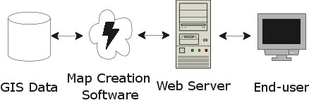
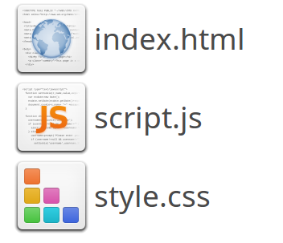
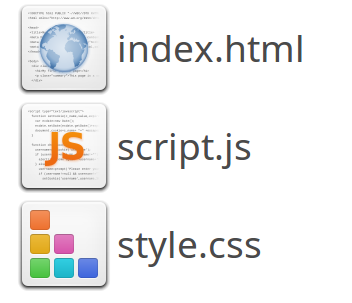

Webmapping for beginners
Making Maps with JavaScript
By Niene Boeijen

WIFI |
Pssword |
Presentation |
http://bit.ly/2uF2IhL |
Workshop |
http://bit.ly/2viXRGF |
or
github.com/NieneB/webmapping_for_beginners
Welcome!

Workshop made for Foss4G Boston, Aug 2017
Niene Boeijen


Web Cartographer & Geo ICT developer
Maptime Amsterdam & Utrecht
Internship Geo Web Visualization
Msc Geo Information Science & Remote Sensing
What the map can be
We make interactive maps and visualizations.
Our expertise is open {source; data; standards}
Our power lies in combining cartography with web technology.
Utrecht, The Netherlands
Maptime
Time for making maps!


Goal of today!
At the end of this workshop, you will have your own web page with an interactive map! Including custom data and different background maps, of the area you want to show! Your web page will be hosted on Github, so you can immediately share your progress with all your family and friends!

Beginners

For beginners means: if you have NO knowledge of JavaScript, HTML, CSS, Leaflet.js and D3.js, this workshop will help you get started!
This is how we do it:
| Introduction | 15 min |
| Leaflet.js | 15 min |
| Workshop Leaflet.js | 60 min |
| Break! | |
| D3.js | 15 min |
| Workshop D3.js | 60 min |
| Show & tell | |
Let's get started!
What is a web map?
Analogue paper - Digital maps - Web Maps
[Data, tiles, styles and servers.]
View in a browser, scroll, pan, zoom.
Examples:
openstreetmap.org
google.com/maps
a little History
Digital maps
GIS software
GIS on the Web is not user friendly..
1996 Mapquest first with a web service!

But really slow to load..
in 2004 Endoxon found a way for quick online mapping! map.search.ch
2005 Google Maps took over!
The solution?
Tiles!
Tiles
All tiles size 256x256 pixels
Placed in a grid, sharing boundaries
Seamless map
All these little tiles load way faster than one big map!
We call this slippy maps
Zoom levels
Each zoom level has its own set of tiles!
Zoom level 0: 1 tile for the whole world.
Increases exponentially...
Zoom level 1: 4 tiles
Zoom level 2: 16 tiles
etc.
 Map with tile bounds
Map with tile bounds
Styling & Serving tiles
Tiles are styled and rendered in advance
Tiles are just images on the web
http://tile.openstreetmap.org/5/16/10.png
{kind=link}
/z/x/y

Layers!
Base Layer
Raster

Data Layer / Feature Layer
Vector

Building blocks
Data
Styles
Tiles
Layers
Servers

How to bring this all together?
JavaScript!
Making a Web Page
 

New to HTML & CSS?
Start with Making a web page
Or use Code Academy

Maps with JavaScript
a Map is a lot!
Data + style = map tiles / Background map
Data layers, polygons, lines & points
Functionality: zoom, pan, popups, markers, routes, etc.
Interactivity
etc.
JavaScript Libraries!
JavaScript Library
Including a JavaScript library in your code is like copying and pasting someone else's code into yours. You have access to everything in that library.
In our case, it's a bunch of cool tools to make web maps and give them familiar functionality.
JavaScript Libraries for Mapping
Leaflet.js
An Open-Source JavaScript Library for Mobile-Friendly Interactive Maps
simplicity, performance and usability
Developed by: Vladimir Agafonkin.
Weighing about 38 KB of JS.
Has all the mapping features most developers ever need.
Can be extended with Plugins
Well documented
What Leaflet does not do:
Provide data for you.
Provide the basemap.
Its not GIS
Leaflet is a framework
Some examples
http://spatial.ly/2017/03/mapping-european-population/
Gimme the code!
Include in HTML head
HTML body
CSS
#mapid { height: 180px; }JavaScript
var map = L.map('map').setView([51.505, -0.09], 13);
L.tileLayer('http://{s}.tile.osm.org/{z}/{x}/{y}.png', {
attribution: '© OpenStreetMap contributors'
}).addTo(map);
What will we do?
Add a Base Map
Adding markers, circles, polygons
Add custom data
Let's Map!
Everything is on Github
Github?!

Used for code.
Version control.
Sharing.
Documentation.
Problems or questions?
Use the INTERNET!
Use the Leaflet documentation!
StackOverflow is awesome!
Ask me
Be creative!

There is more to find on the Internet
playing is learning
Do not keep yourself to the assignments!!
Presentation |
http://bit.ly/2uF2IhL |
Workshop |
http://bit.ly/2viXRGF |
or
github.com/NieneB/webmapping_for_beginners
Let's have a break!

15 min
Presentation |
http://bit.ly/2uF2IhL |
Workshop |
http://bit.ly/2viXRGF |
or
github.com/NieneB/webmapping_for_beginners
D3.js
A JavaScript library for manipulating documents based on data
D3 helps you bring data to life using HTML, SVG, and CSS.
Developed by Mike Bostock
Data Driven Documents
SVG mathematical representation of images that scale and are amenable to animation and interaction.
SVG
text-based
vector
two-dimensional graphics.

can be searched, indexed, scripted, and compressed!!
Vector Graphics
Charts (pie, line), Tables, Maps, Networks, animation & interactivity
D3 is NOT
a slippy map creator
Not based on tiles!!
selecting elements
Class, Id, Type
Styles: transperency, color, size, borders
Attributes: classes, id, interactive behavior
Properties: state, true/false
Examples
galleryWhat will we do?
Making a simple map, countries as polygons
Adding Point data, Style data driven
Adding legends and graphs based on the same data
Let's Map!
Everything is on Github
Problems or questions?
Use the INTERNET!
StackOverflow is awesome!
Use the D3.js documentation!
Use bl.ocks.org
Ask me
Be creative!

There is more to find on the Internet
playing is learning
Do not keep yourself to the assignments!!
Presentation |
http://bit.ly/2uF2IhL |
Workshop |
http://bit.ly/2viXRGF |
or
github.com/NieneB/webmapping_for_beginners
Show & Tell
Thank you!
Thanks to:
In random order:
All contributors from Mapschool.io
Maptime Boston
Lyzi Diamond
Wikipedia
Leaflet.js
D3.js
Webmapper
Waag Society
Maptime Amsterdam
Maptime Utrecht
Maptime IO
Code Academy
tutorials of Scott Murray
Noah Veltman
Mike Bostock
Giphy
BFRO